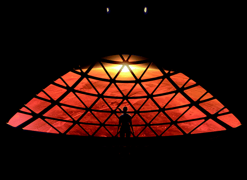
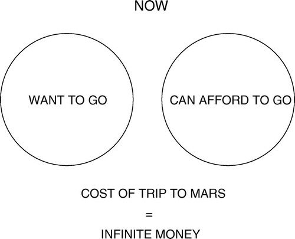
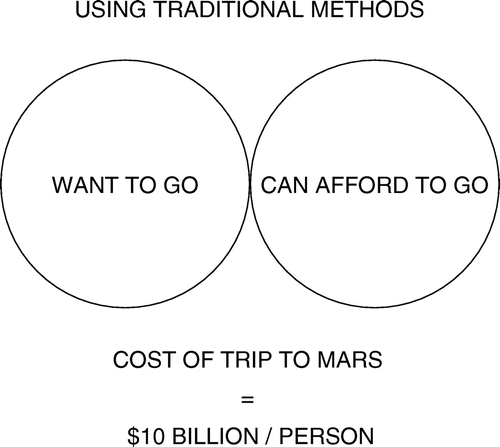
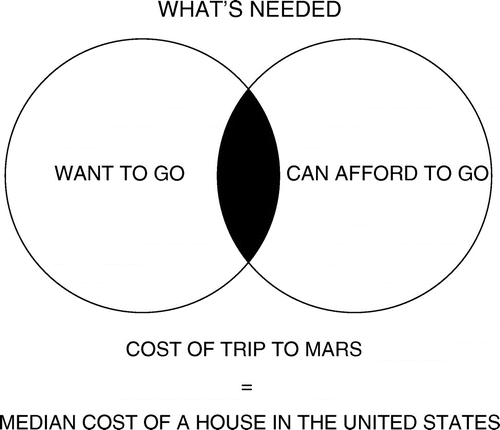

Why Go Anywhere?
I think there are really two fundamental paths. History is going to bifurcate along two directions. One path is we stay on Earth forever, and then there will be some eventual extinction event. The alternative is to become a space-bearing civilization and a multi-planetary species, which I hope you would agree is the right way to go. So how do we figure out how to take you to Mars and create a self-sustaining city—a city that is not merely an outpost but which can become a planet in its own right, allowing us to become a truly multi-planetary species?
Why Mars?
It really only leaves us with one option if we want to become a multi-planetary civilization, and that is Mars. We could conceivably go to our moon, and I actually have nothing against going to the moon, but I think it is challenging to become multi-planetary on the moon because it is much smaller than a planet. It does not have any atmosphere. It is not as resource-rich as Mars. It has got a 28-day day, whereas the Mars day is 24.5 hours. In general, Mars is far better-suited ultimately to scale up to be a self-sustaining civilization. Mars is about half as far again from the sun as Earth is, so it still has decent sunlight. It is a little cold, but we can warm it up. It has a very helpful atmosphere, which, being primarily CO2 with some nitrogen and argon and a few other trace elements, means that we can grow plants on Mars just by compressing the atmosphere. It would be quite fun to be on Mars because you would have gravity that is about 37% of that of Earth, so you would be able to lift heavy things and bound around. Furthermore, the day is remarkably close to that of Earth. We just need to change the populations because currently we have seven billion people on Earth and none on Mars.From Early Exploration to a Self-Sustaining City on Mars
There has been a lot of great work by NASA and other organizations in the early exploration of Mars and understanding what Mars is like. Where could we land? What is the composition of the atmosphere? Where is there water or ice? We need to go from these early exploration missions to actually building a city. The issue that we have today is that if you look at a Venn diagram, there is no intersection of sets—of people who want to go and those who can afford to go(Fig.2)
. In fact, right now, you cannot go to Mars for infinite money. Using traditional methods, taking an Apollo-style approach, an optimistic cost would be about $10 billion per person. Taking the Apollo program as an example, the cost estimates are somewhere between $100 and $200 billion in current-year dollars, and we sent 12 people to the surface of the moon, which was an incredible thing—probably one of the greatest achievements of humanity. However, that is a steep price to pay for a ticket. That is why these circles barely touch (Fig. 3).

You cannot create a self-sustaining civilization if the ticket price is $10 billion per person. What we need to do is to move those circles together (Fig. 4).

If we can get the cost of moving to Mars to be roughly equivalent to a median house price in the United States, which is around $200,000, then I think the probability of establishing a self-sustaining civilization is very high. I think it would almost certainly occur. Not everyone would want to go. In fact, probably a relatively small number of people from Earth would want to go, but enough would want to go who could afford it for it to happen. People could also get sponsorship. It gets to the point where almost anyone, if they saved up and this was their goal, could buy a ticket and move to Mars—and given that Mars would have a labor shortage for a long time, jobs would not be in short supply.
Improving Cost per Ton to Mars by Five Million Percent
It is a bit tricky because we have to figure out how to improve the cost of trips to Mars by five million percent. This translates to an improvement of approximately four-and-a-half orders of magnitude. This is not easy. It sounds virtually impossible, but there are ways to do it. These are the key elements that are needed in order to achieve the four-and-a-half orders of magnitude improvement. Most of the improvement would come from full reusability—somewhere between two and two-and-a-half orders of magnitude. The other two orders of magnitude would come from refilling in orbit, propellant production on Mars, and choosing the right propellant.Full reusability
To make Mars trips possible on a large enough scale to create a self-sustaining city, full reusability is essential. Full reusability is really the super-hard one. It is very difficult to achieve reusability even for an orbital system, and that challenge becomes substantially greater for a system that has to go to another planet. You could use any form of transport as an example of the difference between reusability and expendability in aircraft. A car, bicycle, horse, if they were single-use—almost no one would use them; it would be too expensive. However, with frequent flights, you can take an aircraft that costs $90 million and buy a ticket on Southwest right now from Los Angeles to Vegas for $43, including taxes. If it were single use, it would cost $500,000 per flight. Right there, you can see an improvement of four orders of magnitude. Now, this is harder—reusability does not apply quite as much to Mars because the number of times that you can reuse the spaceship pod of the system is less often because the Earth–Mars rendezvous only occurs every 26 months. Therefore, you get to use the spaceship part approximately every 2 years.Right propellant
Picking the right propellant is also important. There are three main choices, and they each have their merits (Table 4). First, there is kerosene, or rocket propellant-grade kerosene, essentially a highly refined form of jet fuel. It helps keep the vehicle size small, but because it is a very specialized form of jet fuel, it is quite expensive. Its reusability potential is lower. It would be very difficult to make this on Mars because there is no oil. Propellant transfer is pretty good but not great.| C12H22.4/ O2 KEROSENE | H2/ O2 HYDROGEN/OXYGEN | CH4/ O2 DEEP-CRYO METHALOX | |
|---|---|---|---|
| VEHICLE SIZE | 1 | 3 | 1 |
| COST OF PROP | 2 | 3 | 1 |
| REUSABILITY | 2 | 1 | 1 |
| MARS PROPELLANT PRODUCTION | 4 | 2 | 1 |
| PROPELLANT TRANSFER | 2 | 3 | 2 |
1-Good 2-OK 3-Bad 4-Very bad
Hydrogen, although it has a high specific impulse, is very expensive, and it is incredibly difficult to keep from boiling off because liquid hydrogen is very close to absolute zero as a liquid. Therefore, the installation required is tremendous, and the energy cost on Mars of producing and storing hydrogen would be very high. Therefore, when we looked at the overall system optimization, it was clear that methane was the clear winner. Methane would require from 50% to 60% of the energy on Mars to refill propellant using the propellant depot, and the technical challenges are a lot easier. We therefore think methane is better almost across the board. We started off initially thinking that hydrogen would make sense, but ultimately came to the conclusion that the best way to optimize the cost-per-unit mass to Mars and back is to use an all-methane system—or technically, deep-cryo methalox. Whatever system is designed, whether by SpaceX or someone else, these are the four features that need to be addressed in order for the system really to achieve a low cost per ton to the surface of Mars.